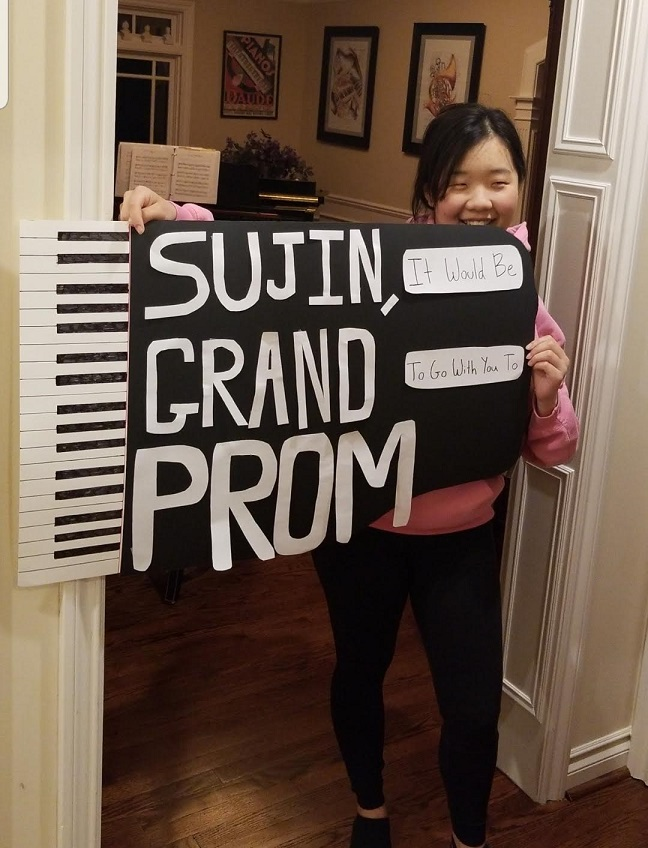

Welcome to the website for my remix project!
This is a remix of my cultural artifact (the piano).
On the white keys, you will find a timeline of my experience with piano.
On the black keys, you will find a timeline of Jazz piano history.
Keys that have information will be shaded gray upon hovering,
and clicking on them will yield an event in the timeline.
It is ordered chronologically from left to right.
Enjoy!
Works Cited
Gioia, Ted. “The Piano Is Dead! Long Live the Piano!” The Daily Beast, The Daily Beast, 18
Jan. 2015, www.thedailybeast.com/the-piano-is-dead-long-live-the-piano.
“Maple Leaf Rag Scott Joplin.” Mcdaniel.Edu, 19 Apr. 2015,
blog.mcdaniel.edu/qlykens/2015/02/26/maple-leaf-rag-scott-joplin/.
Nugent, Addison. “The Day Herbie Hancock Met the Electric Piano.” OZY, OZY, 3 Apr. 2018,
www.ozy.com/flashback/the-day-herbie-hancock-met-the-electric-piano/85466/.
Shteamer, Hank. “Song You Need to Know: Dan Tepfer, ‘Intervals I / Industrial.’” Rolling
Stone, Rolling Stone, 30 Apr. 2019, www.rollingstone.com/music/music-news/dan-
tepfer-intervals-industrial-song-829115/.
I started playing piano in first grade. I played throughout elementary school, but stopped when my teacher retired.
In middle school, I continued playing music by picking up the French horn and played throughout high school.
Senior year of high school, I decided to play piano again.
Playing piano reminded me of my family...

And my friends.
I continue to play to this day with my keyboard.
Jazz piano was first featured in ragtime in the early 1900s, with Scott Joplin paving the way with his Maple Leaf Rag.
Soon many different Jazz subgenres emerged including bebop with Theloniuous Monk in the 1940s.
A big innovation happened in the 1950s when Sun Ra introducted electric piano to Jazz.
This allowed people like Herbie Hancock to come and revolutionize electro Jazz styles in the 1970s.
People still revolutionize today with examples of Robert Glasper fusing Jazz and Hip Hop.
Or others such as John Tepfer taking an experimental approach by featuring an algorithm that improvises with him.